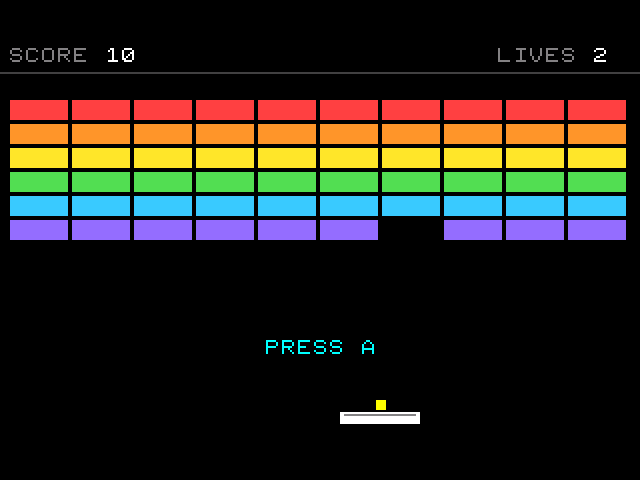
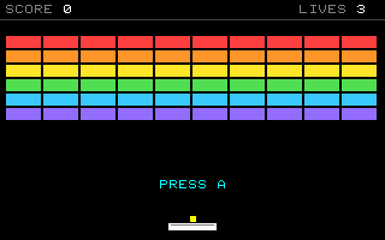
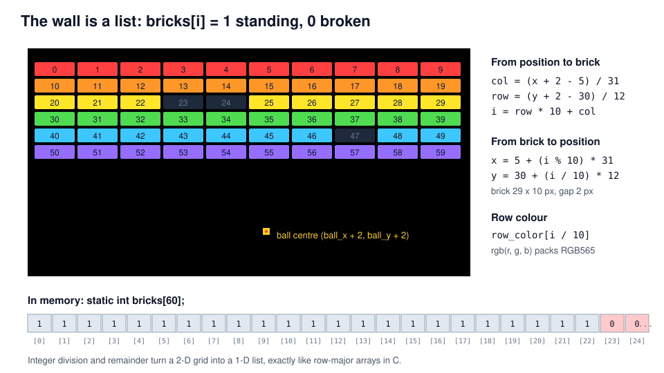
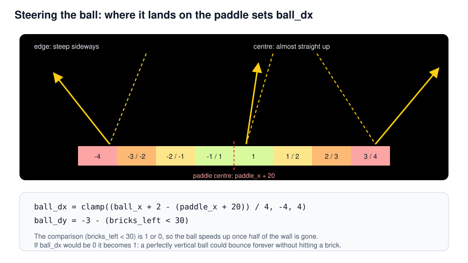
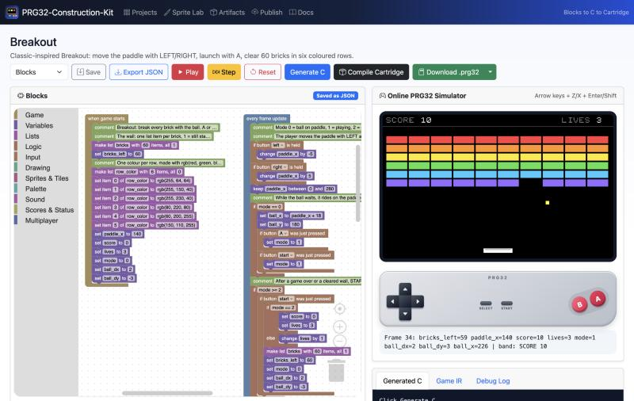
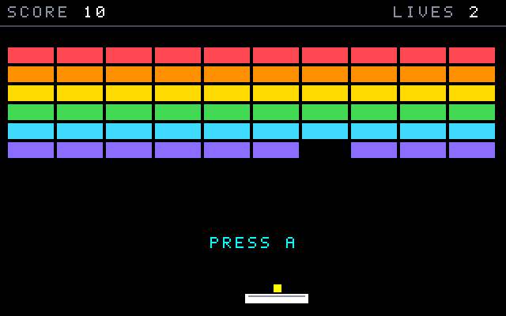

Breakout
Lists as memory: 60 bricks, one ball, and a paddle that aims
PRG32-Construction-Kit tutorial deck, step by step, from blocks to a RISC-V cartridge.

Learning outcomes
- store a 2-D grid in a 1-D list and convert between
(column, row)and an index with/and%; - detect which brick the ball touches with arithmetic instead of a search loop;
- turn a hit position into a bounce angle (a simple control input for the player);
- manage lives, levels and restarts with a small state machine;
- read the generated C: lists become bounds-checked arrays.
Prerequisites: the Pong tutorial (game loop, velocity, collisions). About 90 minutes.
Context
- Atari's Breakout (1976) turned Pong into a single-player game: the second paddle became a wall of bricks. Its prototype hardware is famously associated with Steve Wozniak and Steve Jobs.
- The wall is the first data structure of this course: 60 numbers that remember which bricks are still standing.
- Later games (Arkanoid, 1986) added power-ups; the core loop stayed the same.
A brick wall is an array. Breaking a brick is writing a 0 into memory; drawing the wall is reading the memory back.
Original, classic-inspired reimplementation for teaching; not affiliated with the historical products.
Rules and controls
| Button | Action |
|---|---|
| LEFT / RIGHT | move the paddle |
| A or START | launch the ball |
| START | play again |
- Top rows are worth more: 60 points for the top row, 10 for the bottom row.
- Three lives; missing the ball costs one.
- After half of the wall is gone the ball gets faster.
- Clearing the wall gives an extra life and a new wall.

The wall is a list

Step 1 - Making the wall
- make list bricks with 60 items, all 1 creates
static int bricks[60]and fills it. row_colorholds one RGB565 colour per row.rgb(255, 64, 64)packs red, green and blue into 16 bits: 5 + 6 + 5.- Lists are created in when game starts and can be refilled later (a new wall is the same block again).
Step 2 - Paddle and the waiting ball
In mode 0 the ball is attached to the paddle: its position is computed from the paddle, not integrated from a velocity.
Two different just pressed blocks can start the same action: A or START.
Step 3 - Ball motion and walls
Step 4 - Which brick did we hit?
No loop over 60 bricks: integer division finds the only brick that can be under the ball's centre.
- Reading
bricks[row * 10 + col]outside the list gives 0 (the kit checks bounds), so a ball above the wall is safe. - The guard
ball_x + 2 >= 5 && ...keeps negative coordinates from rounding towards zero into brick 0.
Speed is at most 4 px per frame and bricks are 10 px tall, so the ball cannot skip a row.
Step 4 - The same step in C
/* Which brick is under the centre of the ball? */
col = (ball_x + 2 - 5) / 31;
row = (ball_y + 2 - 30) / 12;
if (ball_x + 2 >= 5 && ball_y + 2 >= 30 && col < 10 && row < 6) {
if (prg32_kit_get(bricks, 60, row * 10 + col) == 1) {
prg32_kit_set(bricks, 60, row * 10 + col, 0);
bricks_left += -1;
score += (6 - row) * 10;
ball_dy = -ball_dy;
prg32_audio_note(1, 0, 84 - row * 3, 255, 60);
}
}prg32_kit_get and prg32_kit_set are three-line helpers written into the same C file: out-of-range reads return 0 and out-of-range writes do nothing.
Step 5 - Aiming with the paddle

Step 5 - Paddle hit in blocks
clamp(v, low, high) is a kit function; (bricks_left < 30) is a comparison used as a number (1 or 0).
Step 6 - Lives, cleared walls, restart
Step 7 - Drawing the wall
- One repeat draws all 60 bricks:
x = 5 + (i % 10) * 31,y = 30 + (i / 10) * 12. - draw rectangle ... color value takes a colour expression:
row_color[i / 10]. - Broken bricks are simply not drawn: the list is the single source of truth.
/* Brick i is drawn at column i % 10 and row i / 10, in its row colour. */
{
/* repeat i from 0 to 59 (at most 1024 times) */
int prg32_kit_step0;
int prg32_kit_last0 = 59;
int prg32_kit_count0 = 0;
for (prg32_kit_step0 = 0; prg32_kit_step0 <= prg32_kit_last0 && prg32_kit_count0 < 1024; ++prg32_kit_step0, ++prg32_kit_count0) {
i = prg32_kit_step0;
if (prg32_kit_get(bricks, 60, i) == 1) {
prg32_gfx_rect(5 + (i % 10) * 31, 30 + (i / 10) * 12, 29, 10, prg32_kit_get(row_color, 6, i / 10));
}
}
}Play it in the browser

- Dashboard, Examples, Breakout (complete game), Add.
- Play: LEFT/RIGHT, then A to launch.
- Watch
bricks_left,scoreandmodein the debug line under the screen. - Generate C and find
static int bricks[60];.
Build and run the cartridge
Download .prg32 builds breakout-esp32c6.prg32; the arrow next to it builds breakout-qemu.prg32.
python3 -m prg32 qemu upload breakout-qemu.prg32
python3 -m prg32 qemu run
PRG32-QT: Import Cartridge, or
prg32qt-headless breakout-qemu.prg32 300 --dump-ppm breakout.ppm

What the toolchain produced
| Measure | Value |
|---|---|
| Blocks | 3 stacks, 122 blocks |
| Generated C | 345 lines |
| RISC-V code (rv32imc) | 4784 bytes |
| Lists | bricks[60], row_color[6] |
| Required PRG32 features | audio, sprites |
| Verified on | simulator, QEMU firmware, PRG32-QT |
An autoplay test in the simulator (tools/simulate.js with a scripted player) cleared the wall eleven times in 40 000 frames: the game can always be finished.
Exercises
- Hard bricks: store 2 in the top row and subtract 1 per hit; draw bricks with value 2 darker.
- Score multiplier: double the points while
bricks_left < 10. - Two balls: turn
ball_x,ball_y,ball_dx,ball_dyinto lists of 2 and loop over them. - Bigger wall: 12 columns of 25-px bricks. Which numbers in the formulas change?
- Analysis: why is a ball faster than 10 px per frame a problem for the brick test?
References
- PRG32: https://github.com/riscv-prg32/PRG32; PRG32-QT: https://github.com/riscv-prg32/PRG32-QT
- Block reference:
docs/blockly.md; lists and expressions are described there. - N. Wirth, Algorithms + Data Structures = Programs, Prentice-Hall (1976): arrays and index arithmetic.
- R. Nystrom, Game Programming Patterns (2014), "Data Locality".